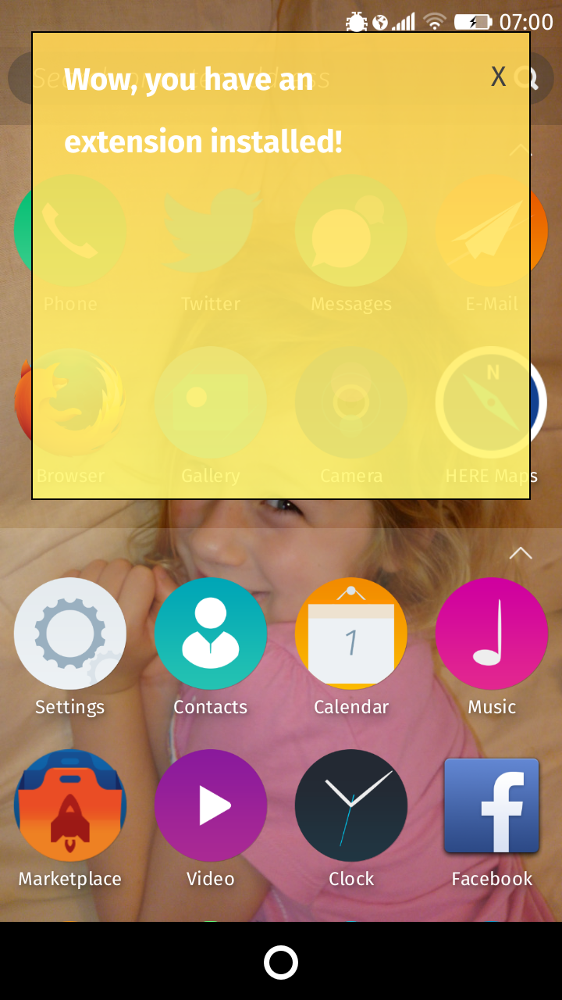
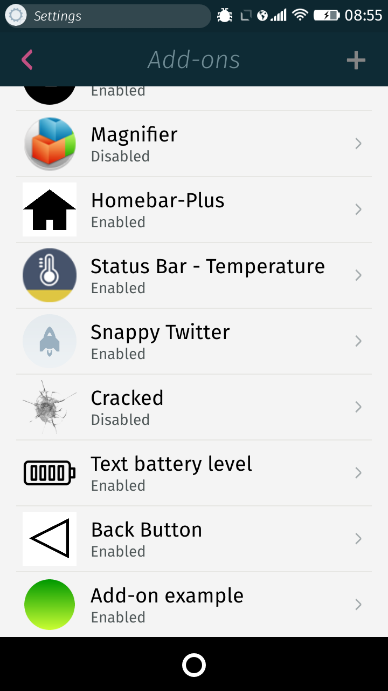
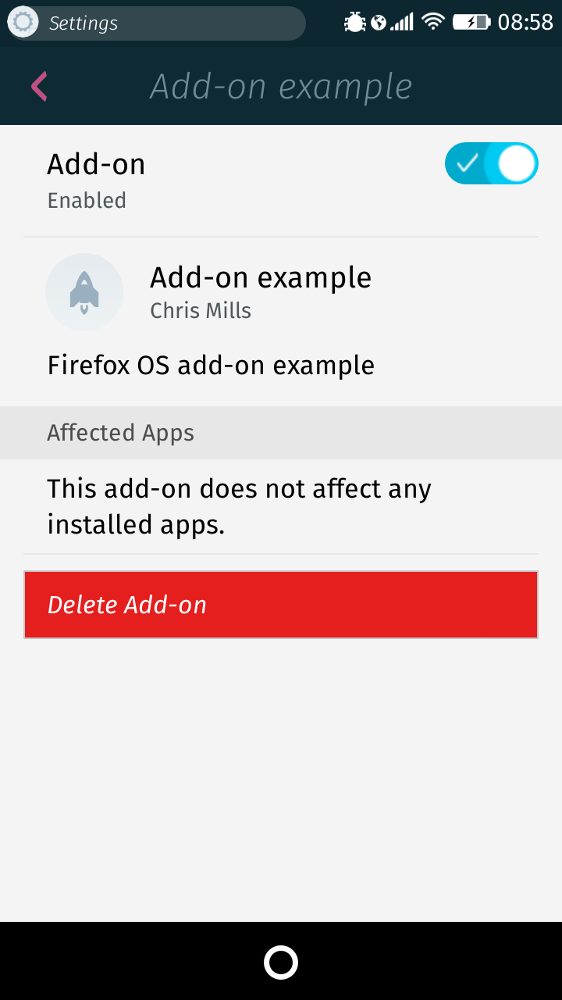

Important: Add-ons are only available on Firefox OS 2.5+.
Add-ons are a well-known concept in the world of web browsers, and this concept has been added to Firefox OS too. A single Firefox OS add-on can extend just one app, several, or all of them, including the system app itself. This article provides a guide to creating your own Firefox OS add-ons, as well as hints, tips, and other information to be aware of.
Note: Firefox OS Add-ons use the WebExtensions extension model, which is largely based on Chrome/Blink add-ons, providing many advantages to how add-ons are created, in terms of interoperability and features. To learn more, keep checking back on our growing WebExtensions documentation.
Add-ons are app packages composed of JavaScript, CSS, and other assets. However, they don't run as standalone apps. Instead, the add-on manifest includes special features to define what apps to apply the add-on to. When apps are launched on a Firefox OS device that has an add-on installed, the add-on is injected into any app that matches the pattern specifed in the matches field of the {{anch("manifest.json")}} file.
Firefox OS add-ons use the same syntax and structure for their code as the new school of Firefox add-ons developed using the WebExtensions API, which is itself based on the Chrome extensions model.
To help explain Firefox OS add-on basics, we'll introduce a simple example that adds a banner the system app, which can be clicked to dismiss it.

This is very basic and trivial, but it gives you enough to get started. You can check out the code on Github, and install the add-on on your Firefox OS device by cloning the repo locally and using {{anch("WebIDE")}}.
Note: If your add-on affect the system or homescreen apps, you will have to restart your phone for it to take effect. This includes when you disable then re-enable the app.
Be aware that Firefox OS add-ons can do a lot more than what we've got listed here. The WebExtensions documentation will have more information added as time goes on.
In this section we'll walkthrough the contents of the sample add-on repo, explaining each piece of content. The directory structure looks like this:
Important: The matches field does not currently have the correct logic implemented to match multiple apps with patterns (see {{bug("1196386")}} for implementation progress.) For the moment, you are limited to setting add-ons to affect individual apps, as shown below.
You'll notice that we've got two manifest-type files inside our sample add-on directory. The first of these — manifest.json — follows the Chrome-style manifest style, and is placed inside the {{anch("extensions.zip")}} package along with the CSS, JavaScript and icon assets that comprise the add-on. It can contain a large variety of instructions (see Chrome Manifest File Format), but for now we're just going to concentrate on a simple subset:
{
"manifest_version": 1,
"name": "Add-on banner",
"description": "Firefox OS add-on example",
"version": "1.0",
"author": "Chris Mills",
"content_scripts": [{
"matches": ["app://system.gaiamobile.org/index.html"],
"css": ["css/style.css"],
"js": ["js/index.js"]
}],
"icons": {
"128": "/icons/128.png"
}
}
Most of these fields are pretty self-explanatory, but we'll cover the last few.
First of all, the content_scripts field references the code that will be injected into apps that the add-on is applied to — you'll see that we are providing the path to the CSS and JavaScript files in the css and js fields. The matches field contains a pattern that specifies which apps the code will be injected into. This pattern can take a number of different forms (see Chrome Match Patterns), but for now we are simply specifying app://system.gaiamobile.org/index.html, which causes it to affect the system app only.
Note: You can reference multiple scripts and stylesheets by simply including multiple items in the arrays, for example "css": ["css/style.css", "css/more.css"].
Note: Firefox OS does not currently support the Chrome <all_urls> keyword.
At the bottom of the manifest we've included the icons field; see the next section for more info on this.
The update.webapp manifest is a Firefox OS-style Manifest, which is basically a packaged app-style mini-manifest (see Self-publishing packaged apps.)
Our update.webapp looks like so:
{ "name" : "Add-on banner", "description": "Firefox OS add-on example", "developer": { "name": "Chris Mills" }, "package_path": "extension.zip", "icons": { "128": "/icons/128.png" } }Again, most of this is fairly self-explanatory.
Probably the most important field in here is package_path, which points to the package that contains the extension.
You'll notice that the icons field is included here, the same as it is in {{anch("manifest.json")}} — update.webapp is the only place you need to have the icons information at the moment, but we'd recommend you include it in both places for now, just in case things change. The icons field points to the add-on icon so it can be used inside the Gaia Settings app, and the Firefox Marketplace when it starts to host add-ons.
There is nothing special about the CSS included in the example. The only thing to bear in mind is that you should make sure your add-on classnames and selectors do not conflict with any of the existing CSS in the app(s) it is applied to.
For example, we wrapped our example banner in a {{htmlelement("div")}} with class fxos-banner. But you could even consider using some kind of unique code for your classname.
Again, the JavaScript file that powers the add-on doesn't have any special functionality inside it (see the JavaScript source on Github.) It is injected into the apps it is applied to along with any CSS specified in the {{anch("manifest.json")}} file.
Note: Add-on code is injected every time an app is launched and the match specified in manifest.json pattern matches that app. They are also injected whenever they are enabled. When an add-on is injected into an app because the app is launching, all add-on files are injected into the app before anything in the app is initialized, including the DOM. iT is up to the add-on developer to handle the different launch cases cases (immediate injection vs. injection on launch); there is more info on this below.
Other main things to note are covered below.Add-ons only share a proxied version of the content window. As a result, anything that is written to the window object from an add-on is unavailable to the app code. However, anything on the window object that is set by app code is available to add-ons. Similarly, the DOM is accessible as usual.
You can use JavaScript APIs to manipulate the app's DOM.
Next, you must be careful to properly handle cases where an add-on is injected into an app after the app has been loaded. Such a scenario can occur when an app is already running and an add-on that targets it is enabled. in such a case, a window.onload handler won't work because the DOMContentLoaded event has already occured.
There's no good solution to this problem right now. In the interim, we recommend to check whether or not the DOM has been loaded before setting a DOMContentLoaded callback. This pattern is used in the demo:
// If injecting into an app that was already running at the time
// the app was enabled, simply initialize it.
if (document.documentElement) {
initialize();
}
// Otherwise, we need to wait for the DOM to be ready before
// starting initialization since add-ons are usually (always?)
// injected *before* `document.documentElement` is defined.
else {
window.addEventListener('DOMContentLoaded', initialize);
}
function initialize() {
// ...
}
Finally, to prevent an add-on from being injected into a single app instance multiple times, you can set a DOM attribute denoting that the add-on has already been injected. If it's detected as being already set on injection, the add-on should abort its initialization process. We use a helloWorldInitialized attribute in our code, like this:
function initialize() {
if (document.documentElement.dataset.helloWorldInitialized) {
// Already injected, abort.
return;
} else {
var body = document.querySelector('body');
var fxosBanner = document.createElement('div');
fxosBanner.classList.add('fxos-banner');
var bannerText = document.createElement('p');
var closeBtn = document.createElement('button');
fxosBanner.appendChild(bannerText);
fxosBanner.appendChild(closeBtn);
body.appendChild(fxosBanner);
closeBtn.textContent = 'X';
bannerText.textContent = 'Wow, you have an extension installed!';
document.documentElement.dataset.helloWorldInitialized = true;
closeBtn.onclick = function() {
fxosBanner.parentNode.removeChild(fxosBanner);
document.documentElement.dataset.helloWorldInitialized = false;
}
}
}
Note how clicking the button to remove the banner sets the helloWorldInitialized attribute back to false — if the user cleared the banner last time; we want to show it to them again! (evil marketing techniques never die.)
All Apps and Mgmt functions work on add-ons just like they do on apps. Be aware however that the latter are only available to add-ons when they are injected into a certified app that has the webapps-manager permission specified in the manifest.
In addition to these functions, an onenabledstatechange callback is exposed for add-ons being enabled and disabled. This event is fired for all add-ons, so you will have to check which add-on was enabled/disabled before performing initialization or cleanup.
navigator.mozApps.mgmt.onenabledstatechange = function(event) { var app = event.application; if (app.manifestURL === 'https://origin.of.manifest/manifest.webapp') { var wasEnabled = app.enabled; // do something with this information } };
You need to include at least one icon and reference it from your manifest, otherwise the manifest doesn't validate. See the Manifest reference icons section for more information.
The extension.zip archive contains the code for the extension, and is referenced in the {{anch("update.webapp")}} package_path field — This is how Gecko finds the code to be installed. Archived inside you'll find:
So the manifest.json file sits inside the archive, and serves to reference the files to be injected and specify which apps to affect.
Add-ons are packaged just like any other app, therefore they can be installed in the same ways. For example, if you wanted to distribute your own add-on, you could use some code like the block below to allow people to install your add-on from a web page. The code uses the installPackage() method to install the add-on. In terms of installation, it is effectively a packaged app:
var installBtn = document.querySelector('button');
installBtn.onclick = function() {
install('update.webapp')
}
function install(url) {
navigator.mozApps.installPackage('https://chrisdavidmills.github.io/simple-addon/' + url);
}
Bear in mind however that add-ons need privileged permission set in the manifest; they need to be served via a marketplace, sideloaded or installed while in developer mode, etc, although once installed however you don't need any special privileges to apply them to apps. But because of this, we'd recommend waiting until the Firefox Marketplace starts to host add-ons, and distributing them from there.
You are free to test add-ons using the WebIDE tool, as explained below.
Mozilla's WebIDE tool is available in Firefox desktop by default. To use it for installing add-ons on your phone, follow the steps listed below:
update.webapp manifest file, and press "Open".Your add-on should now be installed and achivated immediately. If it affects the systems app, you will need to restart the phone to see it take effect.
You can control the add-ons on your phone by going to Settings app > Add-ons; in here you'll find a list of your installed add-ons, and you can tap each entry to see more information about each add-on.

By default, add-ons are enabled after installation. They can be enabled/disabled via the checkbox at the top of each individual app's page (found under Settings app > Add-ons), or programmatically using the navigator.mozApps.mgmt.setEnabled() function.
You cna delete an add-on entirely by tapping the "Delete" button found on individual app pages.
You'll also notice that in the page for each individual add-on there is a section that lists which apps are affected by that add-on. Currently this doesn't seem to work (it always lists "This add-on does not affect any installed apps".) This should be fixed soon.
Note: There is currently a bug requiring the network.disable.ipc.security to be disabled for extensions to work. This can be done manually, or by enabling Developer Mode. This should be fixed soon.
Add-ons inherit their permissions entirely from their host app. Requesting permissions in the add-on manifest (see {{anch("update.webapp")}}) will have no effect, and will not expose any APIs to the add-on that are not available to the host app.